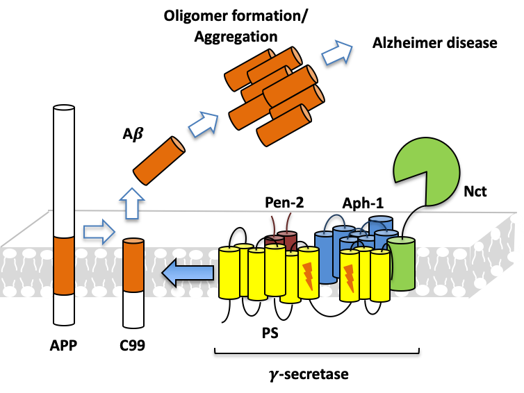
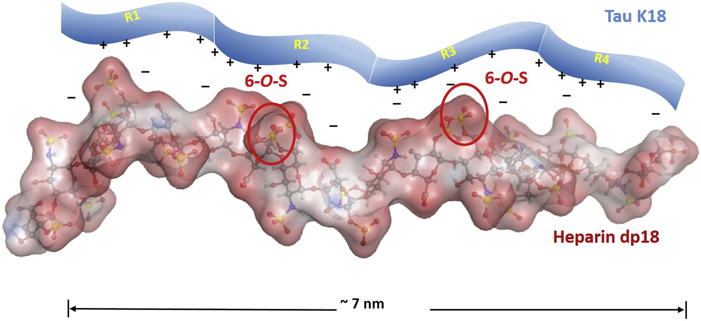
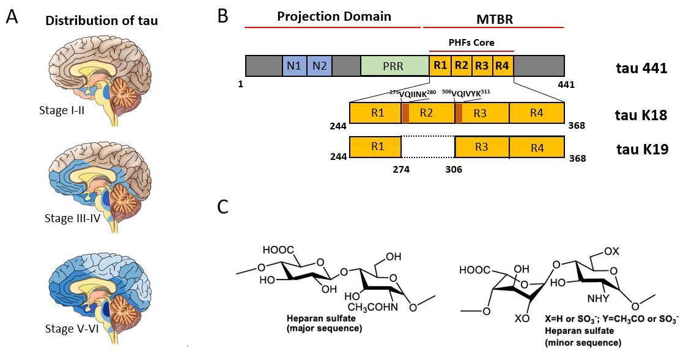
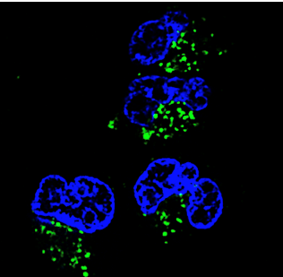
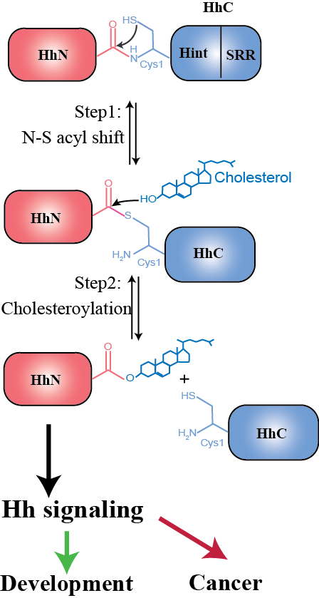

About Our Research
Currently, we are interested in Alzheimer’s disease (AD) and cancer. In AD, we are studying the structural mechanisms of the generation of amyloid-β peptide (Aβ). We also study the interaction between glycan and tau, which facilitates the spread of tau pathology, neurofibrillary tangle (NFT, the other pathological hallmark of AD). In cancer, we are studying the structural mechanism of Hedgehog signaling and p53 interactions.
Our Projects
Project 1: AD Drug Discovery Targeting Aβ Production
The intramembrane proteolysis mechanism can result in the formation of Aβ protein, which is a molecule that can aggregate into fibril and plaques in the brain, a pathological hallmark of Alzheimer’s disease (AD). We are seeking inhibitors which can stop Aβ processing.
AD drug discovery targeting Aβ precursor protein (APP) processing
Project 2: The Transmission of Tau Protein and Related Tau-glycans Interactions
Microtubule associated protein tau is an intrinsically disordered protein (IDP) and aggregates to form neurofibrillary tangles (NFT) within neurons, a pathological hallmark of AD. Recent work has shown that heparan sulfate proteoglycan (HSPG) on neuronal surface binds tau aggregates or misfolded tau monomers, facilitating tau uptake and intracellular seeding of aggregation. The structural basis of tau-glycans interactions will reveal many unanswered questions about tau pathology and implicate new strategy for AD drug discovery.
The transmission of tau protein and related tau-glycans interactions
A. Prion like spread of tau | B. Primary sequence of tau | C. Chemical structure of glycans
Cellular uptake of tau
(*KEY* blue: nucleus of the cell, green: tau)
Project 3: Hedgehog Autoprocessing and Cancer
The Hedgehog (Hh) signaling pathway plays vital roles in development while its aberrant activity is linked to multiple cancers. We study mechanisms involved in Hedgehog autoprocessing to guide drug discovery for inhibiting autoprocessing in cancers.
Hedgehog autoprocessing